Section X - Firestopping Systems
Page 279

muca SECTION X FIRESTOPPING SYSTEMS 10.1 GENERAL firestopping shall consist of furnishing and installing a material or a combination of materials to form an effective barrier against the spread of flame, smoke, gases and moisture, It is to main- tain the integrity of the fire-resistance rated construction.
There are several sections for firestopping, Penetrations, Joints (Walltops/Boüoms, Expansion and Contraction) and Perimeter fire Containment.
However, this section encompasses only pen- Üations pertaining to insulated piping, ductwork and equipment.
10.2 CODES AND SPECIFICATIONS All firestopping shall be done in strict accordance with local build- ing code guidelines including but not limited to such code agen- Cies as: International Code Councill International Bulding Code, International fire Code.
and National Fire Protection Association 5000.
firestop systems must be installed according to manu- facturer•s specifications by qualified craftsmen.
There are many manufacturers of firestopping products, and each makes a broad range of products widi application specifications.
Be sure to check all product specifications prior to beginning any firestopping work.
10.3 FIRESTOPPING TERMINOLOGY There are terms and procedures which are industry specific to firestopping.
We have attempted to define such firestopping terms in the Glossary.
The glossary, though extensive, is not complete and any terms that are not understood should be reviewed before proceeding with any work.
269
Page 280
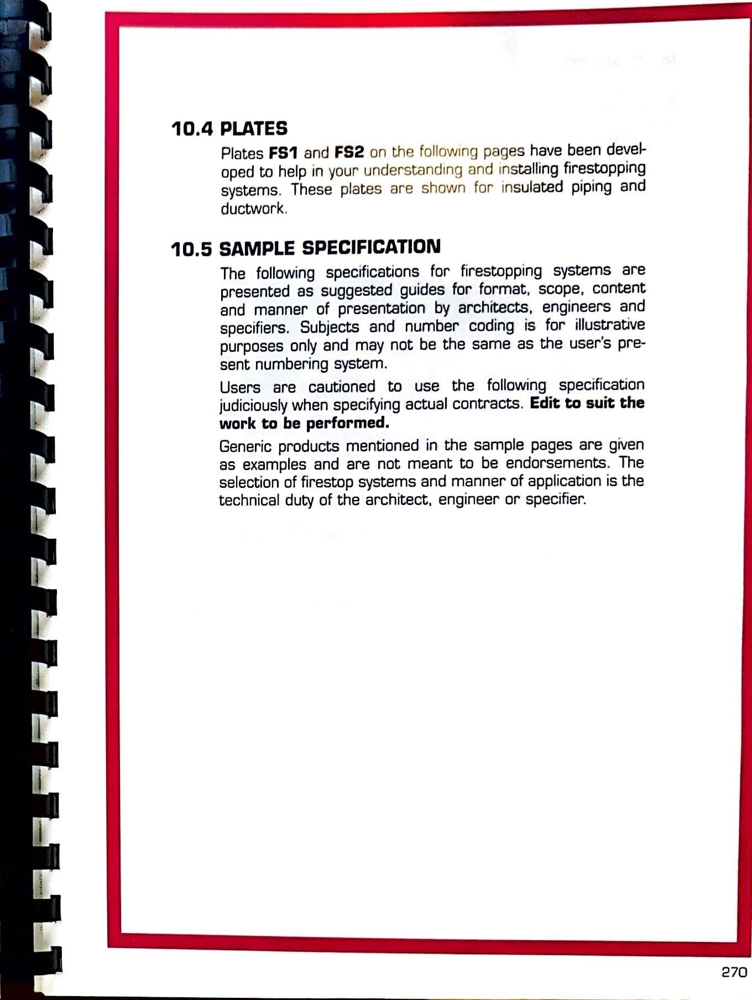
10.4 PLATES on the following pages have been devel- Plates FSI and FS2 oped to help in your understanding and Installing firestopping systems.
These plates are shown for insulated piping and ductwork.
10.5 SAMPLE SPECIFICATION The following specifications for firestopping systems are presented as suggested guides for format, scope, content and manner of presentation by architects, engineers and specifiers.
Subjects and number coding is for illustrabve purposes only and may not be the same as the user's pre- sent numbering system.
Users are cautioned to use the following specification judiciously when specifying actual contracts.
Edit to suit the work to be performed.
Generic products mentioned in the sample pages are given as examples and are not meant to be endorsements.
The selection of firestop systems and manner of application is the technical duty of the architect, engineer or specifier.
270
Page 281
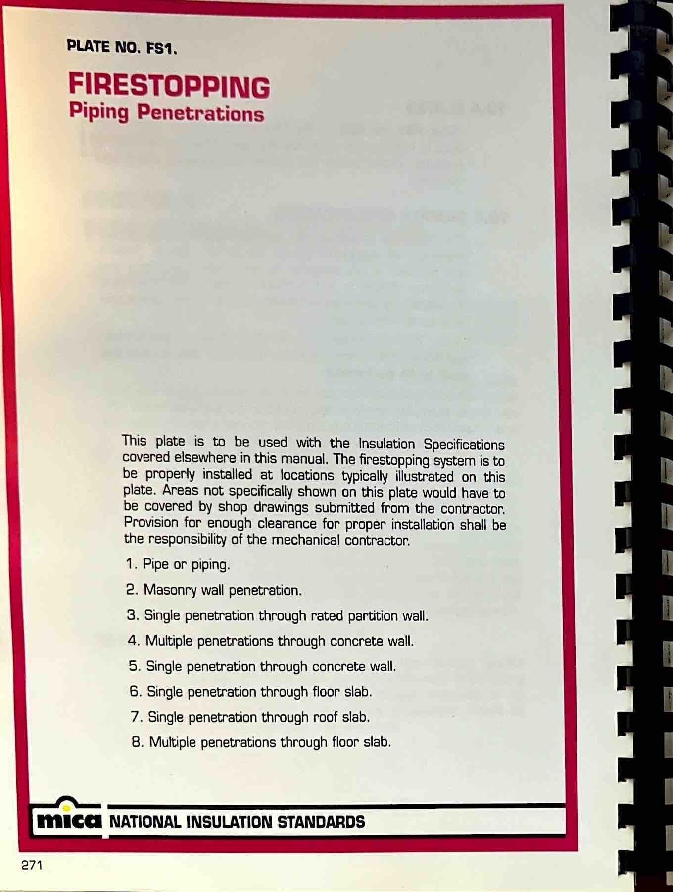
PLATE NO.
FSI.
FIRESTOPPING Piping Penetrations This plate is to be used with the Insulation Specifications covered elsewhere in this manual.
The firestopping system is to be properly installed at locations typically illustrated on this plate.
Areas not specifically shown on this plate would have to be covered by shop drawings submitted from the contractor.
Provision for enough clearance for proper installation shall be the responsibility of the mechanical contractor.
1.
Pipe or piping.
2.
Masonry wall penetration.
a.
Single penetration through rated partition wall.
4.
Multiple penetrations through concrete wall.
5.
Single penetration through concrete wall.
6.
Single penetration through floor slab.
7.
Single penetration through roof slab.
8.
Multiple penetrations through floor slab.
muca NATIONAL INSULATION STANDARDS 271
Page 282
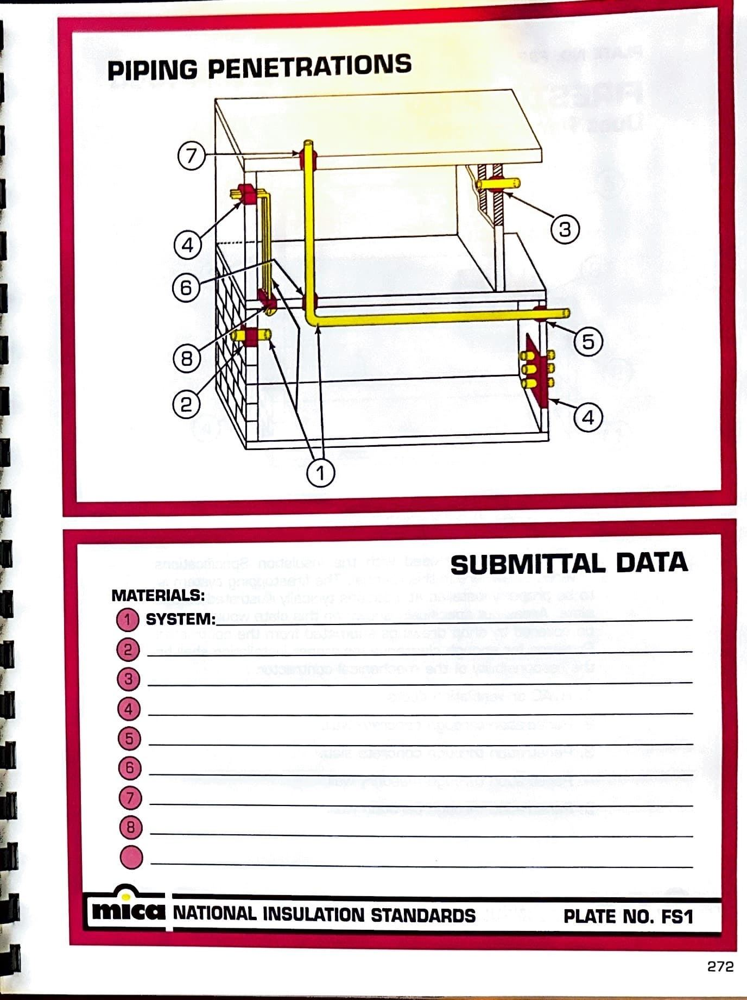
PIPING PENETRATIONS SUBMITTAL DATA MATERIALS: SYSTEM: nuca NATIONAL INSULATION STANDARDS PLATE NO.
FSI 272
Page 283
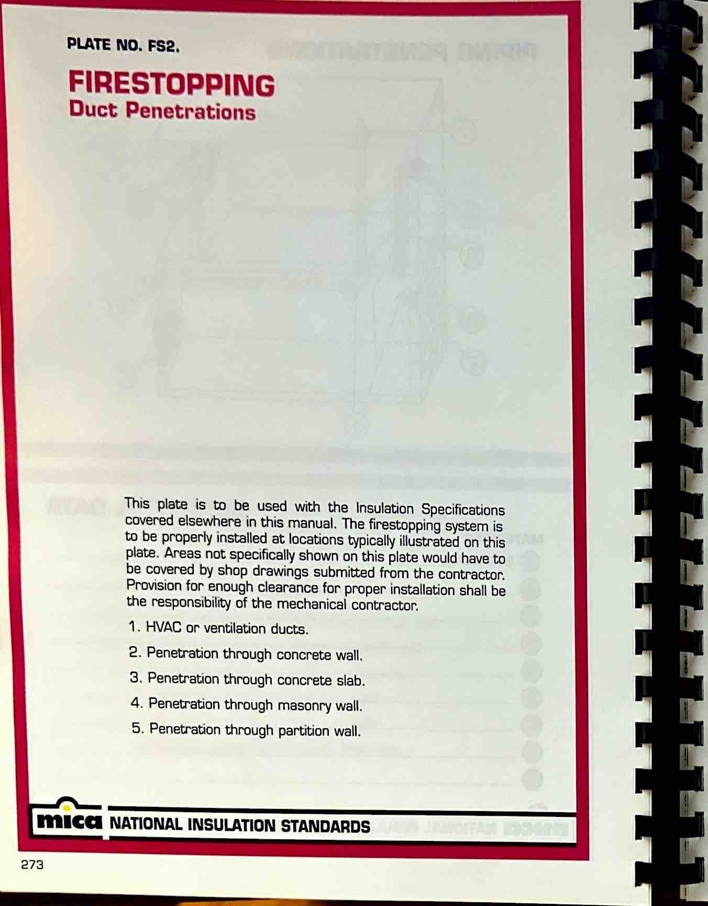
PLATE NO.
FS2.
FIRESTOPPING Duct Penetrations This plate is to be used with the Insulation Specifications covered elsewhere in this manual.
The firestopping system is to be properly installed at locations typically illustrated on this plate.
Areas not specifically shown on this plate would have to be covered by shop drawings submited from the contractor.
Provision for enough clearance for proper installation shall be the responsibility of the mechanical contractor.
1 .
HVAC or ventilation ducts.
2.
Penetration through concrete wall.
3.
Penetration through concrete slab.
4.
Penetration through masonry wall.
5.
Penetration through partition wall.
muca NATIONAL INSULATION STANDARDS 273
Page 284
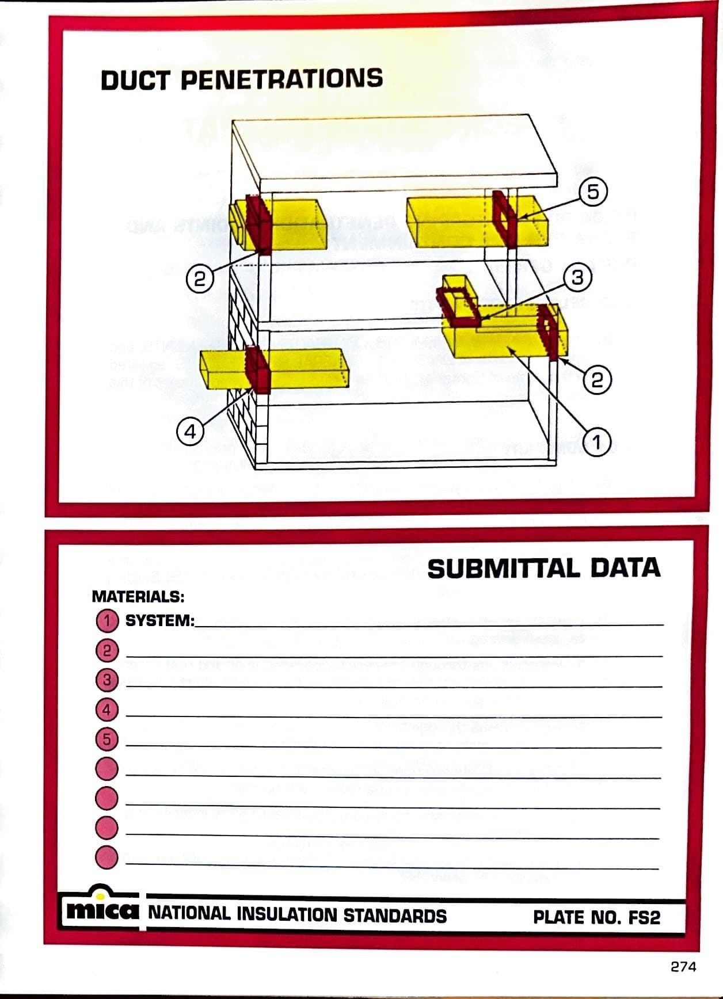
DUCT PENETRATIONS 2 4 MATERIALS: O SYSTEM: O O O 5 3 2 1 SUBMITTAL DATA nuca NATIONAL INSULATION STANDARDS PLATE NO.
FS2 274
Page 285
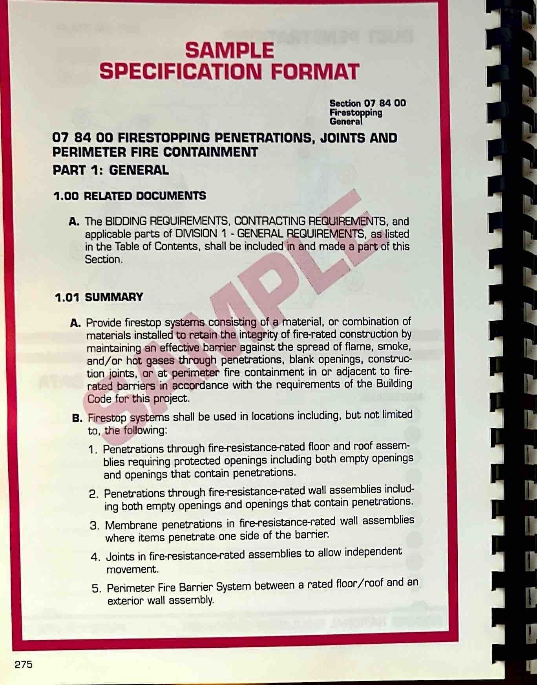
SAMPLE SPECIFICATION FORMAT Section 07 84 00 firestopping General 07 84 OO FIRESTOPPING PENETRATIONS, JOINTS AND PERIMETER FIRE CONTAINMENT PART 1: GENERAL 1.00 RELATED DOCUMENTS A.
The BIDDING REQUIREMENTS.
CONTRACTING REOUIREMENTS.
and applicable parts of DIVISION 1 - GENERAL REQUIREMENTS, as listed in the Table of Contents, shall be included In and made a part of this Section.
1.01 SUMMARY A.
Provide firestop systems consisüng of a material, or combination of materials installed retain the integrity of fire-rated construction by maintaining an effective bamier against the spread of flame, smoke, and/or hot gases through penetrations, blank openings, construc- tion joints, or at perimeter fire containment in or adjacent to fire- rated barriers in accordance with the requirements of the Building Code for this project.
B.
Firestop systems shall be used in locations including, but not limited to, the following: 1.
Penetrations through fire-resistance-rated floor and roof assem- blies requiring protected openings including both empty openings and openings that contain penetrations.
2.
Penetrations through fire-resistance-rated wall assemblies includ- ing both empty openings and openings that contain penetrations.
3.
Membrane penetrations in fire-resistance-rated wall assemblies where items penetrate one side of the barrier.
4.
Joints in fire-resistance-rated assemblies to allow independent movement.
5.
Perimeter Fire Barmer System between a rated floor/roof and an exterior wall assembly 275
Page 286
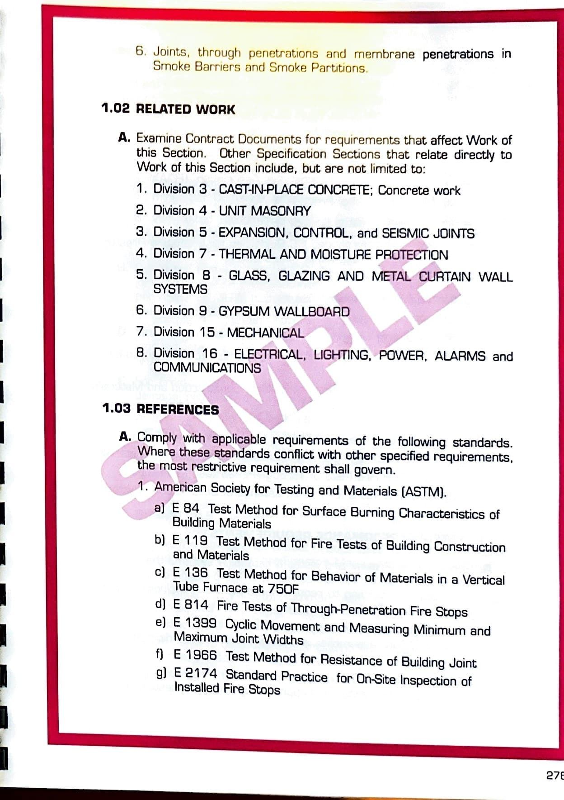
6.
Joints, through penetrations and membrane penetrations in Smoke Barriers and Smoke Partitions.
1.02 RELATED WORK A.
Examine Contract Documents for requirements that affect Work of this Section.
Other Specification Sections that relate directly to Work of this Section include, but are not limited to: 1.
Division a - CAST-IN-PLACE CONCRETE; Concrete work 2.
Division 4 - I-JNIT MASONRY a.
Division 5 - EXPANSION, CONTROL.
and SEISMIC JOINTS 4.
Division 7 - THERMAL AND MOISTURE PROTECTION 5.
Division B - GLASS, GLAZING AND METAL 'CURTAIN WALL SYSTEMS 6.
Division 9 - GYPSUM WALLBOARD 7.
Division 15 - MECHANICAL 8.
Division 16 - ELECTRICAL, LIGHTING, -POWER, ALARMS and COMMUNICATIONS 1.03 REFERENCES A.
Comply with applicable requirements of the following standards.
Where these standards conflict with other specified requirements, the most restrictive requirement shall govern.
1 .
American Society for Testing and Materials (ASTM).
a) E 84 Test Method for Surface Burning Characteristics of Building Materials b) E 119 Test Method for Fire Tests of Building Construction and Materials c) E 136 Test Method for Behavior of Materials in a Vertical Tube Furnace at 750F d) E 814 Fire Tests of Through-Penetration Fire Stops e) E 1899 Cyclic Movement and Measuring Minimum and Maximum Joint Widths f) E 1966 Test Method for Resistance of Building Joint g) E 2174 Standard Practice for On-Site Inspection of Installed Fire Stops
Page 287
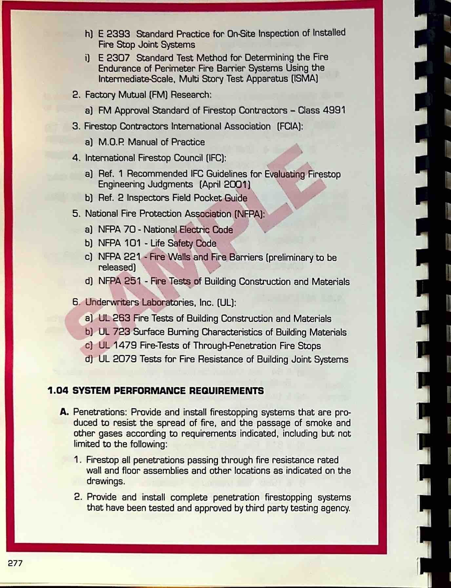
h) E 2393 Standard Practice for On-Site Inspection of Installed Fire Stop Joint Systems i) E 2307 Standard Test Method for Determining the Fire Endurance of Perimeter Fire Barrier Systems Using the Intermediate-Scales Multi Story Test Apparatus (ISMA) 2.
Factory Mutual (FM) Research: a) FM Approval Standard of firestop Contractors — Class 4991 a.
firestop Corfractors International Association (FCIA): a) M.O.P Manual of Practice 4.
International Firestop Council (IFC): a) Ref.
1 Recommended IFC Guidelines for Evaluating Firestop Engineering Judgments (April 2001) b) Ref.
2 Inspectors Field Pocket Guide 5.
National Fire Protection Association (NFPA): a) NFPA 70 - National Electric Code b) NFPA 101 - Life safety Code c) NFPA 22t•Fire Walls and Fire Barriers (preliminary to be released) d) NFPA 251 - Fire Tests of Building Construction and Materials 6.
Underwriters Laboratories, Inc.
(LIL): a) UL 263 fire Tests of Building Construction and Materials b) UL 723 Surface Burning Characteristics of Building Materials I-JL 1479 fire-Tests of Through-Penetration fire Stops d) UL 2079 Tests for fire Resistance of Building Joint Systems 1.04 SYSTEM PERFORMANCE REQUIREMENTS A.
Penetrations: Provide and install firestopping systems that are pro- duced to resist the spread of fire, and the passage of smoke and other gases according to requirements indicated, including but not limited to the following: 1.
firestop all penetrations passing through fire resistance rated wall and floor assemblies and other locations as indicated on the drawings.
2.
Provide and install complete penetration firestopping systems that have been tested and approved by third party testing agency.
277
Page 288
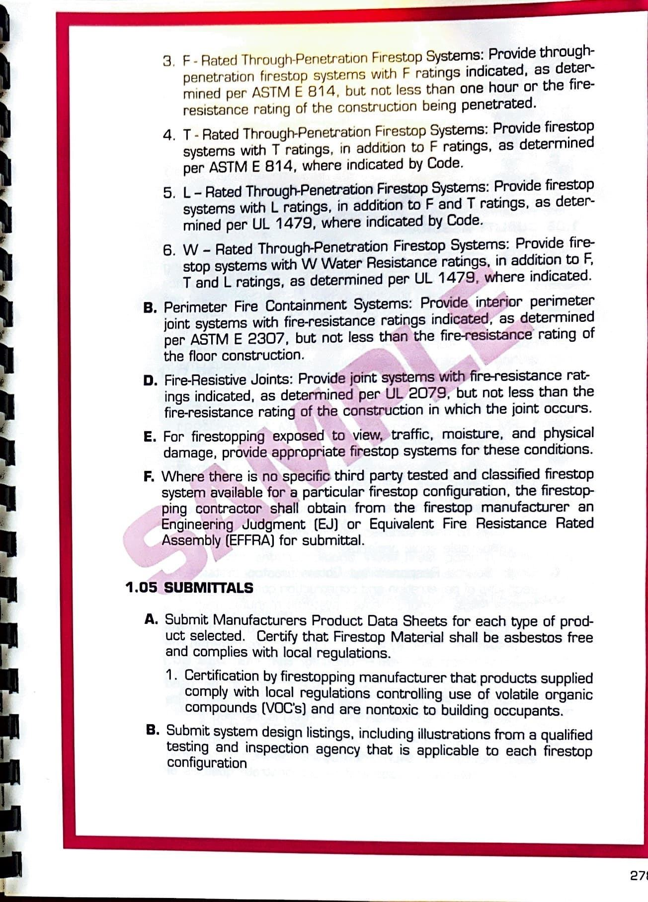
3.
F - Rated Through-Penetrauon Firestop Systems: Provide through- penetration firestop systems With F ratings indicated, as deter- mined per ASTM E 814, but not less than one hour or the fire- resistance rating of the construction being penetrated.
4.
T - Rated Through-Penetratlon Firestop Systems: Provide firestop systems With T ratings, in addition to F ratings, as determined per ASTM E 814, where indicated by Code.
5.
L — Rated Through-Penetration Firestop Systems: Provide firestop systems with L ratings, in addition to F and T ratings, as deter- mined per LIL 1479, where indicated by Code.
6.
W — Rated ThrougtYPenetration Firestop Systems: Provide fire- stop systems with W Water Resistance ratings, in addition to F, T and L ratings, as determined per LIL 1479, where indicated.
B.
Perimeter Fire Containment Systems: Provide Interior perimeter joint systems with fire-resistance ratings indicated, as determined per ASTM E 2307, but not less than the fire-resistance rating of the floor construction.
D.
Fire-Resistive Joints: Provide joint systems with fire-resistance rat- ings indicated, as determined per LIL 2079, but not less than the fire-resistance rating of the construction in which the joint occurs.
E.
For firestopping exposed to view traffic, moisture, and physical damage, provide appropriate firestop systems for these conditions.
F.
Where there is no specific third party tested and classified firestop system available for a particular firestop configuration, the firestop- ping contractor shall obtain from the firestop manufacturer an Engineering Judgment (EJ) or Equivalent fire Resistance Rated Assembly (EFFRA) for submittal.
1.05 SUBMITTALS A.
Submit Manufacturers Product Data Sheets for each bype of prod- uct selected.
Certify that firestop Material shall be asbestos free and complies with local regulations.
I .
Certification by firestopping manufacturer that products supplied comply with local regulations controlling use of volatile organic compounds (VOCs) and are nontoxic to building occupants.
B.
Submit system design listings, including illustrations from a qualified testing and inspection agency that is applicable to each firestop configuration 271
Page 289
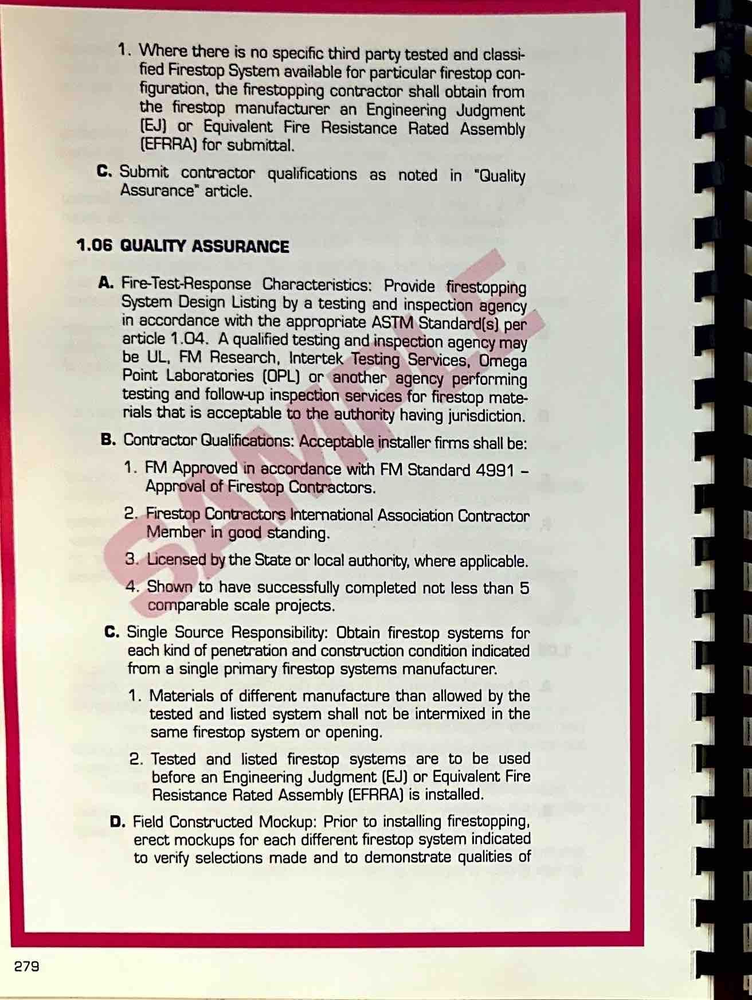
1.
Where tiere is no specific third party tested and classi- fied firestop *tem available for particular firestop con- figuration, the firestopping conusactor shall obtain from the firestop manufacturer an Engineering Judgment (EJ) or Equivalent Fire Resistance Rated Assembly (EFRRA) for submital.
C.
Submit contractor qualifications as noted in "Quality Assurance' article.
1.06 auALny ASSURANCE A.
fir•Test-Response Characteristics: Provide firestopping System Design Listing by a testing and inspection agency in accordance with the appropriate ASTM Standard(s) per article 1.04.
A qualified testing and inspection agency may be LIL, FM Research.
Intertek Testing Services, Omega Point Laboratories (OPL) or another agency performing testing and follow-up inspection services for firestop mate- rials that is acceptable to the authority having jurisdiction.
B.
Conmactor Qualifications: Acceptable installer firms shall be: FM Approved in accordance with FM Standard 4991 — 1.
Approval of firestop Contractors.
2, firestop Coüactors International Association Cofractor Member in good standing.
3.
Licensed by the State or local authority, where applicable.
4.
Shown to have successfully completed not less than 5 comparable scale projects.
C.
Single Source Responsibility: Obtain firestop systems for each kind of penetration and construction condition indicated from a single primary firestop systems manufacturer.
1.
Materials of different manufacture than allowed by the tested and listed system shall not be intermixed in the same firestop system or opening.
2.
Tested and listed firestop systems are to be used before an Engineering Judgment (EJ) or Equivalent Fire Resistance Rated Assembly (EFRRA) is installed.
D.
field Conswucted Mockup: Prior to installing firestopping, erect mockups for each different firestop system indicated to verify selections made and to demonstrate qualities of 279
Page 290
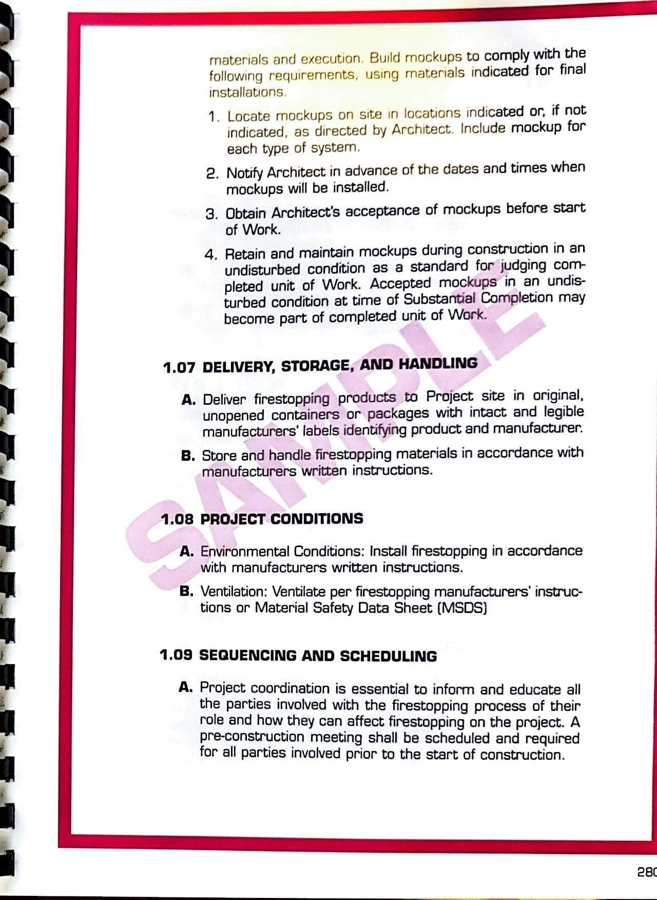
materials and execution.
Budd mockups to comply with the following requirements, using materials indicated for final installations.
1.
Locate mockups on Site in locations indicated or, if not indicated, as directed by Architect.
Include mockup for each type of system.
2.
Notify Architect in advance of the dates and times when mockups Will be installed.
3.
Obtain Architect's acceptance of mockups before start of Work.
4.
Retain and maintain mockups during construction in an undisturbed condition as a st.andard for judging corn- pleted unit of Work.
Accepted mockups in an undis- turbed condition at time of Substantial Completion may become part of completed unit of Work.
1.07 DELIVERY, STORAGE, AND HANDLING A.
Deliver firestopping products to Project site in original, unopened containers or packages with intact and legible manufacturers' labels identifying product and manufacturer.
B.
Store and handle firestopping materials in accordance with manufacturers written instructions.
1.08 PROJECT CONDITIONS Environmental Conditions: Install firestopping in accordance A.
with manufacturers written instructions.
B.
Ventilation: Ventilate per firestopping manufacturers' instruc- tions or Material Safety Data Sheet (MSDS) 1.09 SEQUENCING AND SCHEDULING A.
Project coordination is essential to inform and educate all the parties involved with the firestopping process of their role and how they can affect firestopping on the project.
A pre-construction meeting shall be scheduled and required for all parties involved prior to the start of construction.
28C
Page 291
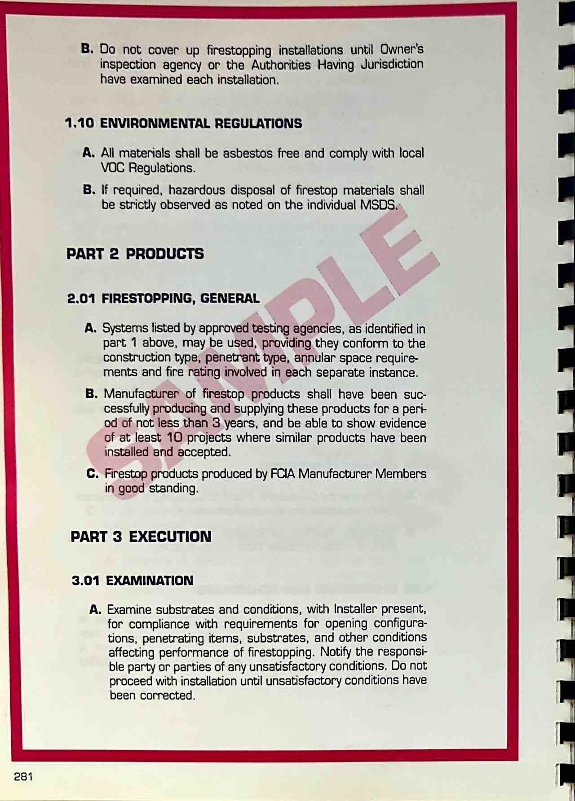
B.
Do not cover up firestopping installations until Owner's inspection agency or the Authorities Having Jurisdiction have examined each installation.
1.10 ENVIRONMENTAL REGULATIONS A.
All materials shall be asbestos free and comply with local VOC Regulations.
B.
If required, hazardous disposal of firestop materials shall be sü'ictly observed as noted on the individual MSDS, PART 2 PRODUCTS 2.01 FIRESTOPPING, GENERAL A.
Systems listed by approved testing agencies.
as identified in part 1 above, may be used, providing they conform to the construction type, penetrant Wpe, annular space require- ments and fire rating involved in each separate instance.
Manufacturer of firestop products shall have been suc- B.
cessfully producing and supplying these products for a peri- od of not less than 8 years, and be able to show evidence of at least 10 projects where similar products have been installed and accepted.
firestop products produced by FCIA Manufacturer Members C.
in good standing.
PART 3 EXECUTION 3.01 EXAMINATION A.
Examine substrates and conditions, with Installer present, for compliance with requirements for opening configura- tions, penetrating items, substrates, and other conditions affecting performance of firestopping.
Notify the responsi- ble party or parties of any unsatisfactory conditions.
Do not proceed with installation until unsatisfactory conditions have been corrected.
281
Page 292
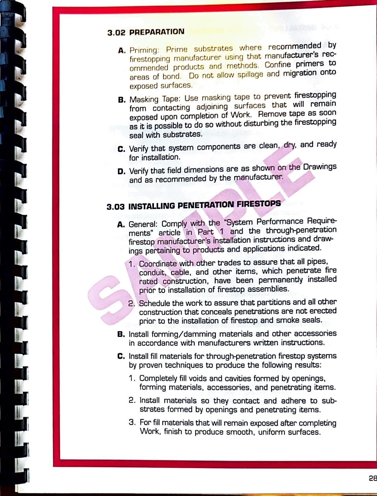
3.02 PREPARATION Priming: Prtrne substrates where recommended by A.
firestopping manufacturer using that manufacturer's rec- ommended products and methods.
Confine primers to areas of bond.
Do not allow spillage and migration onto exposed surfaces.
Masking Tape: Use masking tape to prevent firestopping B.
from contacting adJ01njng surfaces that will remain exposed upon completion of Work.
Remove tape as soon as it is possible to do so wrthout disturbing the firestopping seal with substrates.
Verify that system components are clean, dry, and ready C.
for installation.
Verify that field dimensions are as shown on the Drawings D.
and as recommended by the manufacturer.
3.03 INSTALLING PENETRATION FIRESTOPS General: Comply with the "System Performance Require- A.
ments" article in Part I and the through-penetration firestop manufacturer's installation instructions and draw- ings pertaining to products and applications indicated.
B.
C.
1.
Coordinate with other trades to assure that all pipes, conduit, cable, and other items, which penetrate fire rated construction, have been permanently installed prior to installation of firestop assemblies.
2.
Schedule the work to assure that partitions and all oÜner construction that conceals penetrations are not erected prior to the installation of firestop and smoke seals.
Install forming/damming materials and other accessories in accordance with manufacturers written instructions.
Install fill materials for through-penetration firestop systems by proven techniques to produce the following results: 1.
Completely fill voids and cavities formed by openings, forming materials, accessories, and penetrating items.
2.
Install materials so they contact and adhere to sub- strates formed by openings and penetrating items.
a.
For fill materials that will remain exposed after completing Work, finish to produce smooth, uniform surfaces.
2
Page 293
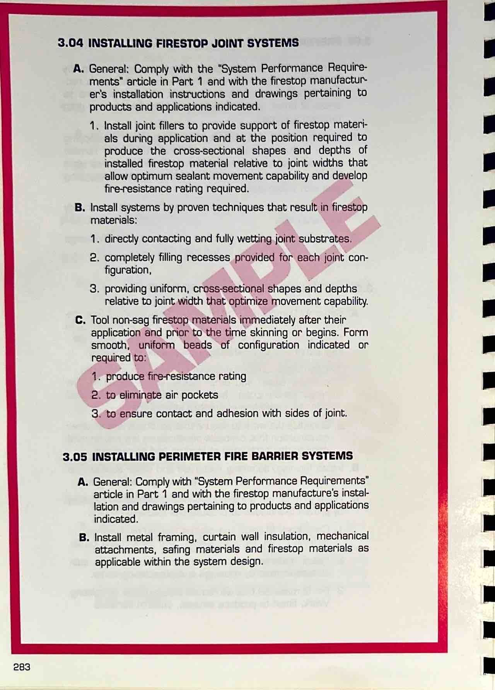
3.04 INSTALLING FIRESTOP JOINT SYSTEMS A.
General: Comply with the "System Performance Require- ments" article in Part 1 and with the firestop manufactur- ep's installation instructions and drawings pertaining to products and applications indicated.
1.
Install joint fillers to provide support of firestop materi- als during application and at the position required to produce the cross-sectional shapes and depths of installed firestop material relative to joint widths that allow optimum sealant movement capability and develop fire-resistance rating required.
B.
Install systems by proven techniques that result in firestop materials: 1.
directly contacting and fully wetting joint substrates, 2.
completely filling recesses provided for each joint con- figuration, 3.
providing uniform, cross-sectional shapes and depths relative to joint width that optimize movement capability.
C.
Tool non-sag firestop materials immediately after their application and prior to the time skinning or begins.
Form smooth, uniform beads of configuration indicated or required to: I.
produce fire-resistance rating 2.
to eliminate air pockets 8.
to ensure contact and adhesion with sides of joint.
3.05 INSTALLING PERIMETER FIRE BARRIER SYSTEMS A.
General: Comply with "System Performance Requirements" article in Part 1 and with the firestop manufacture's instal- lation and drawings pertaining to products and applications indicated.
B.
Install metal framing, curtain wall insulation, mechanical attachments, safing materials and firestop materials as applicable within the system design.
283
Page 294
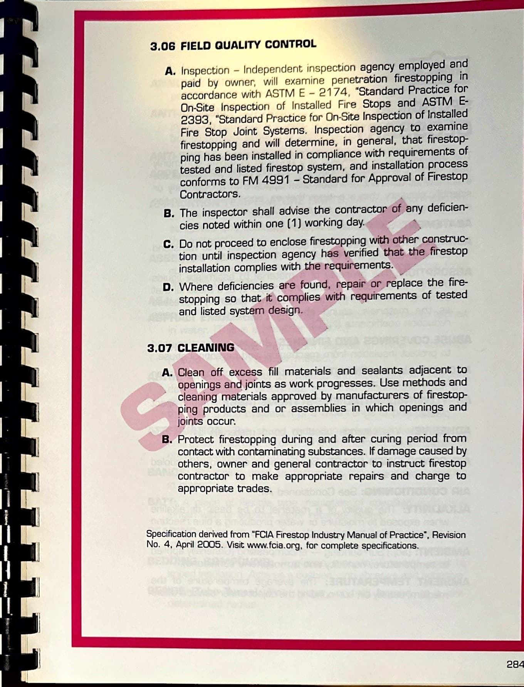
3.0B FIELD QUALITY CONTROL Inspection — Independent inspection agency employed and A.
paid by owner, will examine penetration firestopping in accordance with ASTM E — 2174, "Standard Practice for On-Site inspection of Installed Fire Stops and ASTM E- 2393, "Standard Practice for On-Ste Inspection of Installed Fire Stop Joint Systems.
Inspection agency to examine firestopping and will determine, in general, that firestop- ping has been installed in compliance with requirements of tested and listed firestop system, and installation process conforms to FM 4991 — Standard for Approval of Firestop Contractors.
The inspector shall advise the contractor of any deficien- B.
Cies noted within one (1) working day.
Do not proceed to enclose firestopping with other construc- C.
tion until inspection agency has verified that the firestop installation complies With the requirements.
Where deficiencies are found, repair or replace the fire- D.
stopping so that, it complies with requirements of tested and listed system design.
3.07 CLEANING Clean off excess fill materials and sealants adjacent to A.
openings and joints as work progresses.
Use methods and cleaning materials approved by manufacturers of firestop- ping products and or assemblies in which openings and joints occur.
B.
Protect firestopping during and after curing period from contact with contaminating substances.
If damage caused by others, owner and general contractor to instruct firestop contractor to make appropriate repairs and charge to appropriate trades.
Specification derived from "FCIA firestop Industry Manual of Practice•, Revision No.
4, April 2005.
VISIt www.fcia.org/ for complete specifications.
284